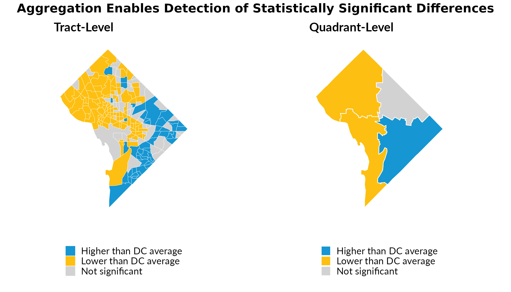

Aggregating to Custom Geographies
custom-geographies.RmdCensus tracts are useful geographic units, but their small populations often produce estimates with large margins of error. When analyzing data, these imprecise estimates make it difficult to detect meaningful differences between areas—even when real differences exist.
calculate_custom_geographies() addresses this by
aggregating tract-level data to user-defined geographies (e.g.,
neighborhoods, planning districts, or school zones). This aggregation
increases sample sizes, reduces coefficients of variation, and enables
more reliable statistical inference.
Example: DC Tract Data
We’ll demonstrate using tract-level data for Washington, DC, comparing the share of population receiving SNAP benefits across areas.
dc_tracts = compile_acs_data(
years = 2024,
geography = "tract",
states = "DC",
spatial = TRUE)Creating Custom Geographies
For illustration, we’ll create four quadrants of DC by grouping tracts based on their centroid coordinates. In practice, you would join tracts to meaningful boundaries like neighborhoods or planning areas, or you could group arbitrary numbers of adjacent tracts to form pseudo-neighborhoods with larger populations than are captured in any single tract.
# Calculate tract centroids and assign to quadrants
dc_tracts = dc_tracts %>%
mutate(
centroid = st_centroid(geometry),
longitude = st_coordinates(centroid)[, 1],
latitude = st_coordinates(centroid)[, 2],
quadrant = case_when(
longitude < median(longitude) & latitude >= median(latitude) ~ "Northwest",
longitude >= median(longitude) & latitude >= median(latitude) ~ "Northeast",
longitude < median(longitude) & latitude < median(latitude) ~ "Southwest",
longitude >= median(longitude) & latitude < median(latitude) ~ "Southeast")) %>%
select(-centroid, -longitude, -latitude)
# Aggregate to quadrants
dc_quadrants = calculate_custom_geographies(
.data = dc_tracts,
group_id = "quadrant",
spatial = TRUE)Comparing Precision: Tracts vs. Custom Geographies
The maps below show the share of households receiving SNAP benefits. Notice how aggregating to quadrants produces more precise estimates with smaller coefficients of variation.
# Tract-level map
map_tracts = dc_tracts %>%
ggplot() +
geom_sf(aes(fill = snap_received_percent), color = "white", linewidth = 0.1) +
scale_fill_gradientn(
colors = c("#CFE8F3", "#1696D2", "#0A4C6A"),
limits = c(0, 0.5),
labels = scales::percent,
na.value = "grey80") +
urbnthemes::theme_urbn_map() +
theme(legend.position = "bottom") +
labs(
fill = "SNAP Receipt",
title = "Tract-Level Estimates",
subtitle = paste0("Median CV: ", round(median(dc_tracts$snap_received_percent_CV, na.rm = TRUE), 1)))
# Quadrant-level map
map_quadrants = dc_quadrants %>%
ggplot() +
geom_sf(aes(fill = snap_received_percent), color = "white", linewidth = 0.3) +
scale_fill_gradientn(
colors = c("#CFE8F3", "#1696D2", "#0A4C6A"),
limits = c(0, 0.5),
labels = scales::percent,
na.value = "grey80") +
urbnthemes::theme_urbn_map() +
theme(legend.position = "bottom") +
labs(
fill = "SNAP Receipt",
title = "Quadrant-Level Estimates",
subtitle = paste0("Median CV: ", round(median(dc_quadrants$snap_received_percent_CV, na.rm = TRUE), 1)))
map_tracts
map_quadrantsThe quadrant-level estimates have substantially lower CVs, indicating more reliable estimates. This precision gain enables meaningful statistical comparisons.
Detecting Statistically Significant Differences
With more precise estimates, we can better identify where SNAP receipt rates differ significantly from the citywide average.
# Calculate DC-wide SNAP rate for comparison
dc_snap_rate = sum(dc_tracts$snap_received, na.rm = TRUE) /
sum(dc_tracts$snap_universe, na.rm = TRUE)
# Test significance at tract level
tracts_sig = dc_tracts %>%
mutate(
significant = tidycensus::significance(
est1 = snap_received_percent,
est2 = dc_snap_rate,
moe1 = snap_received_percent_M,
moe2 = 0.005,
clevel = 0.9),
difference = case_when(
!significant ~ "Not significant",
snap_received_percent > dc_snap_rate ~ "Higher than DC average",
snap_received_percent < dc_snap_rate ~ "Lower than DC average"))
# Test significance at quadrant level
quadrants_sig = dc_quadrants %>%
mutate(
significant = tidycensus::significance(
est1 = snap_received_percent,
est2 = dc_snap_rate,
moe1 = snap_received_percent_M,
moe2 = 0.005,
clevel = 0.9),
difference = case_when(
!significant ~ "Not significant",
snap_received_percent > dc_snap_rate ~ "Higher than DC average",
snap_received_percent < dc_snap_rate ~ "Lower than DC average"))
# Color palette
sig_colors = c(
"Higher than DC average" = "#1696D2",
"Lower than DC average" = "#FDBF11",
"Not significant" = "#D2D2D2")
# Maps
map_tracts_sig = tracts_sig %>%
ggplot() +
geom_sf(aes(fill = difference), color = "white", linewidth = 0.1) +
scale_fill_manual(values = sig_colors, na.value = "grey80") +
urbnthemes::theme_urbn_map() +
theme(legend.position = "bottom") +
labs(fill = "", title = "Tract-Level")
map_quadrants_sig = quadrants_sig %>%
ggplot() +
geom_sf(aes(fill = difference), color = "white", linewidth = 0.3) +
scale_fill_manual(values = sig_colors, na.value = "grey80") +
urbnthemes::theme_urbn_map() +
theme(legend.position = "bottom") +
labs(fill = "", title = "Quadrant-Level")
gridExtra::grid.arrange(
map_tracts_sig, map_quadrants_sig,
ncol = 2,
top = grid::textGrob(
"Aggregation Enables Detection of Statistically Significant Differences",
gp = grid::gpar(fontsize = 12, fontface = "bold")))
At the tract level, large margins of error prevent many estimates from reaching statistical significance. At the quadrant level, the same underlying data produces estimates precise enough to detect significant differences from the citywide average.
Key Takeaways
Aggregation improves precision: Combining tracts into larger geographies reduces CVs and margins of error.
Better inference: More precise estimates enable detection of statistically significant differences that would otherwise be obscured by sampling error.
Proper error handling:
calculate_custom_geographies()correctly recalculates MOEs, SEs, and CVs for aggregated estimates following Census Bureau methodology—simply averaging tract-level statistics would produce incorrect results.Flexible boundaries: The function works with any custom geography defined by a grouping variable, allowing analysis at neighborhood, district, or other policy-relevant scales.